part 1 model
Open the window and find your way around
The whole prop gets made in this one window, so it pays to know where things live.
- In Unity's menu choose Tools›Kelpo›3D Multitool›Open 3D Multitool, or press Ctrl+Shift+K (Cmd+Shift+K on a Mac).
- Dock the window next to the Scene view. You want to see both at once.
- The tabs run down the right edge in the order you'll use them: Model, Sculpt, Retopo, UVs, Paint, Colliders, Export. A barrel needs Model, UVs, Paint, Colliders and Export.

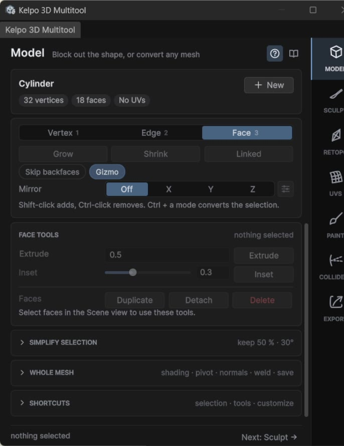
- Tab title. The ? button turns routine hints on and off (warnings always stay). The book button opens the manual.
- Object card. Name, vertex and face count, and whether it has UVs yet. + New makes a new mesh or adds a part.
- Selection card. Vertex 1 Edge 2 Face 3, then Grow Shrink Linked, Skip backfaces, Gizmo and Mirror. The grey line under it is a tiny cheat sheet.
- Tools for the current mode. Face mode shows face tools, Edge mode shows edge tools, and so on.
- Folded extras. Simplify selection, Whole mesh and Shortcuts. The grey text tells you what's inside.
- Footer. What's selected right now, and Next: Sculpt → to move on.
- The rail. Model, Sculpt, Retopo, UVs, Paint, Colliders, Export. Top to bottom is the usual order.
Vertices, edges and faces
Every mesh is made of these three things. The mode you're in decides which of them your clicks pick up.
-
Vertex 1
A single point. Every corner of the mesh is one. Move a vertex and everything attached to it bends along.
-
Edge 2
A straight line joining two vertices. Edges outline the shape. Select a whole ring of them to cut, slide or scale it.
-
Face 3
The surface filled in between edges. It's what you see, extrude and later paint. A face can have three, four or more sides.
Switch modes with 1, 2 and 3 while the mouse is over the Scene view, or with the three buttons at the top of the selection card. Each mode shows its own thing: blue dots in Vertex mode, blue lines in Edge mode, and in Face mode the face under your cursor gets a white outline. Whatever you select turns yellow, and the tools in the window change to match.
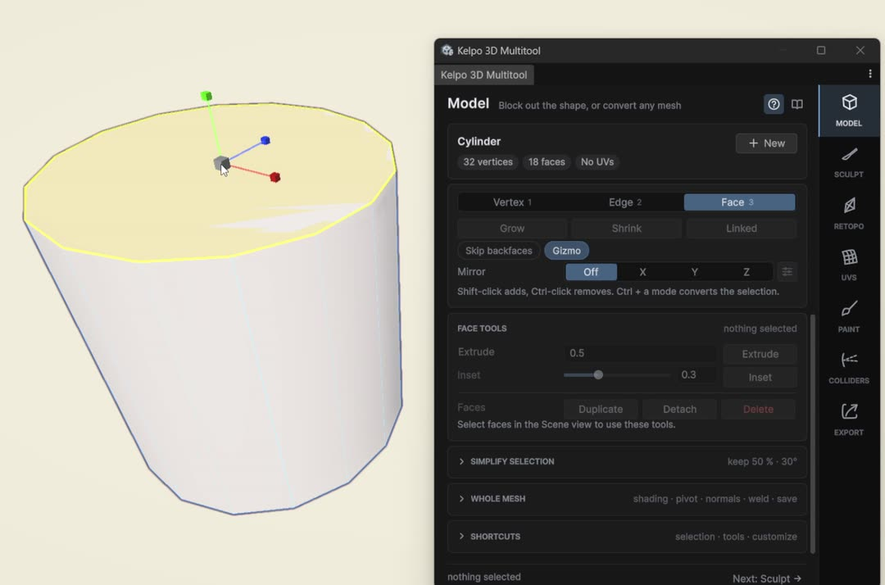
0:29How to select
Almost every modeling step below is the same loop: pick a mode, select something, drag the gizmo.
- click
- Select one thing. Click empty space to clear.
- Shift+click
- Add to the selection.
- Ctrl+click
- Remove from the selection.
- drag on empty space
- Box select. Anything the box touches counts.
- Ctrl+A
- Everything in the current mode. Only this mesh, not every object in the scene.
- Ctrl+click a mode
- Convert the selection instead of starting over. A face becomes its corner vertices or its border edges, a row of edges becomes the faces between them. A plain click on a mode starts a fresh selection.
- Grow Shrink Linked
- One ring more, one ring less, or the whole connected piece.
- L / Shift+L
- In Edge mode: the whole loop around the mesh, or the whole ring of edges running across it. Same as Loop and Ring in the Edge tools.
- W E R
- Move, rotate, scale. These are Unity's own tools and they work on your selection.
- Shift+drag the gizmo
- Extrude. Whatever you drag grows new faces first, then follows the move, rotate or scale. This is the big one.
- Ctrl+Z / Ctrl+Y
- Undo and redo. Selections are undoable too, so a stray click that wiped your selection is one undo away.
On a Mac, use Cmd for the window shortcut, select all and the mode convert.
Start from a 16-sided cylinder
Start from the primitive closest to the final shape. A barrel is a cylinder that ate well.
- With nothing selected, the Model tab shows Start a new mesh with five tiles: Cube, Plane, Sphere, Cylinder and Custom.
- Leave Placement on Scene View Focus so the shape lands where you're looking. Pick World Origin if you want it exactly at 0, 0, 0.
- Click Cylinder. The object card now says Cylinder · 32 vertices · 18 faces · No UVs, and Face mode is on.
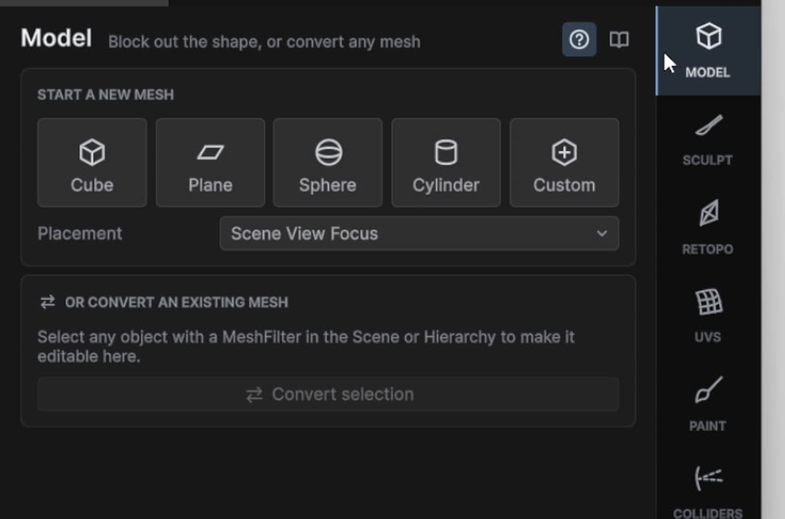
0:08
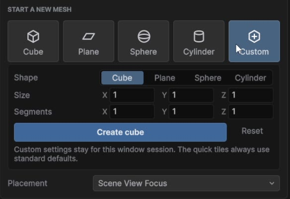
Give it a rim and a sunken lid
Holding Shift turns the move and scale gizmos into extrude tools. A rim is just a face shrunk inward, then pushed down.
- In Face mode (3), click the top face.
- Press R. Hold Shift and drag the center cube of the gizmo inward a little. A new ring of faces appears around the edge. That's the rim.
- Press W. Hold Shift and drag the green arrow down. The middle sinks and the rim gets an inner wall. The card now reads 64 vertices · 50 faces.
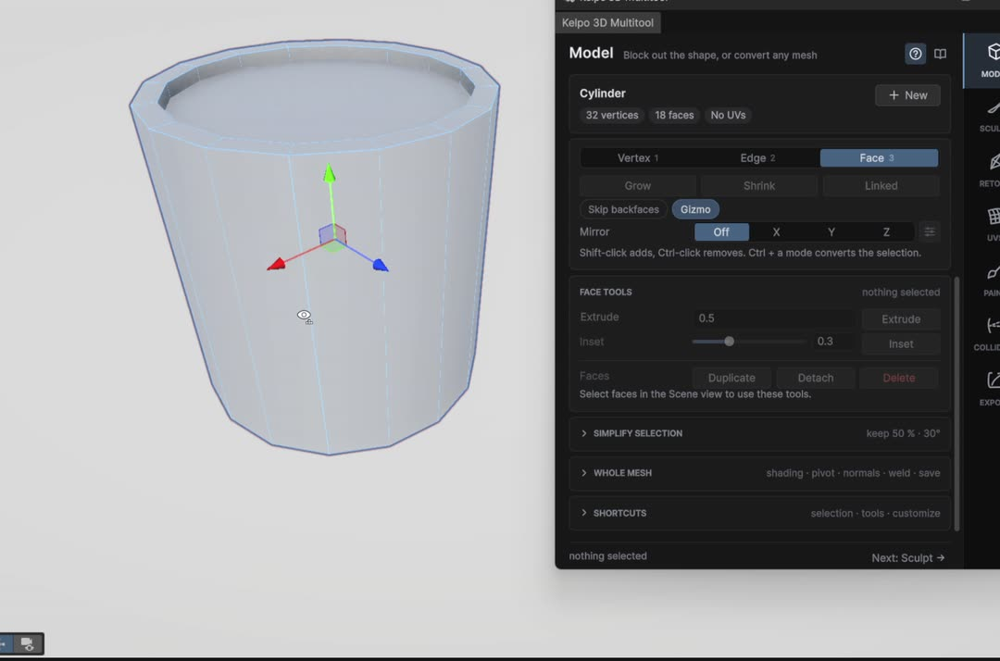
0:07keys here 3 R W Shift+drag
Bulge it with loop cuts
A plain cylinder has nothing in the middle to bend. Each loop cut adds a ring you can scale, and scaling whole rings keeps the barrel round.
- Press 2 for Edge mode and click one upright edge on the side.
- Press Ctrl+R (or Loop cut under Edge tools). A new ring goes all the way round, and it's already selected.
- Press R and drag the center cube outward. The middle of the barrel swells.
- Click an upright edge again, Ctrl+R, R. Scale the rings near the top and bottom out a little less than the middle one. Five rings did it for this barrel.
Need to grab a ring again later? Click one of its edges and press L to select the whole loop.
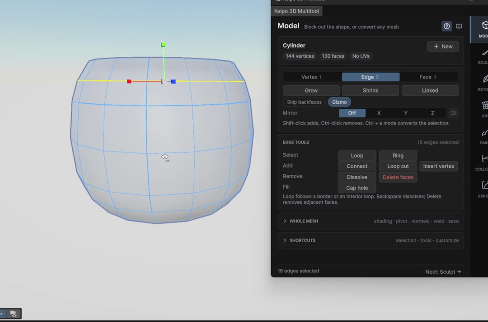
0:18keys here 2 Ctrl+R R L
Close the top with one center point
A lid that's one big 16-sided face shades and paints badly. Welding its corners into a single center point turns it into a neat fan of triangles.
- In Face mode (3), click the sunken lid face.
- Press R, hold Shift and drag the center cube inward to inset it once more.
- Hold Ctrl and click Vertex at the top of the selection card. The face turns into its 16 corner vertices, still selected.
- Open Whole mesh and click Weld selected vertices. It merges them at their average position: one clean center point.
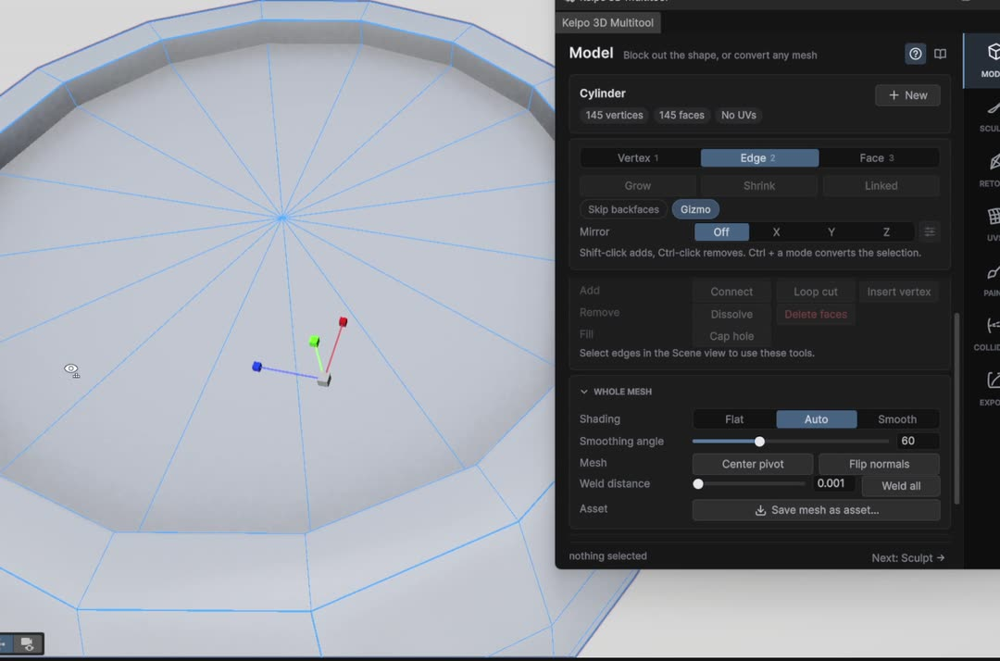
0:11keys here 3 R Shift+drag Ctrl+click Vertex
Choose crisp or soft shading
Shading doesn't change the shape at all, only how light falls across it. It's what makes a 16-sided cylinder read as round.
Every edge is either soft, where light flows smoothly over it, or hard, where you get a crisp crease. In other 3D programs you might know this as smoothing groups or sharp edges. Kelpo doesn't keep numbered smoothing groups. It decides per edge, with three choices under Whole mesh:
- Flat
- Every edge is hard. You see each face as its own flat panel.
- Smooth
- Every edge is soft. Round parts look great, but corners like the rim go mushy too.
- Auto
- Edges where the faces meet at more than Smoothing angle stay hard. Gentler ones get smoothed.
- Open Whole mesh and try Flat, then Smooth, to see the two extremes.
- Settle on Auto and drag the Smoothing angle slider while you watch the rim. You can also drag the label itself to scrub, or type a number. I landed on about 43.
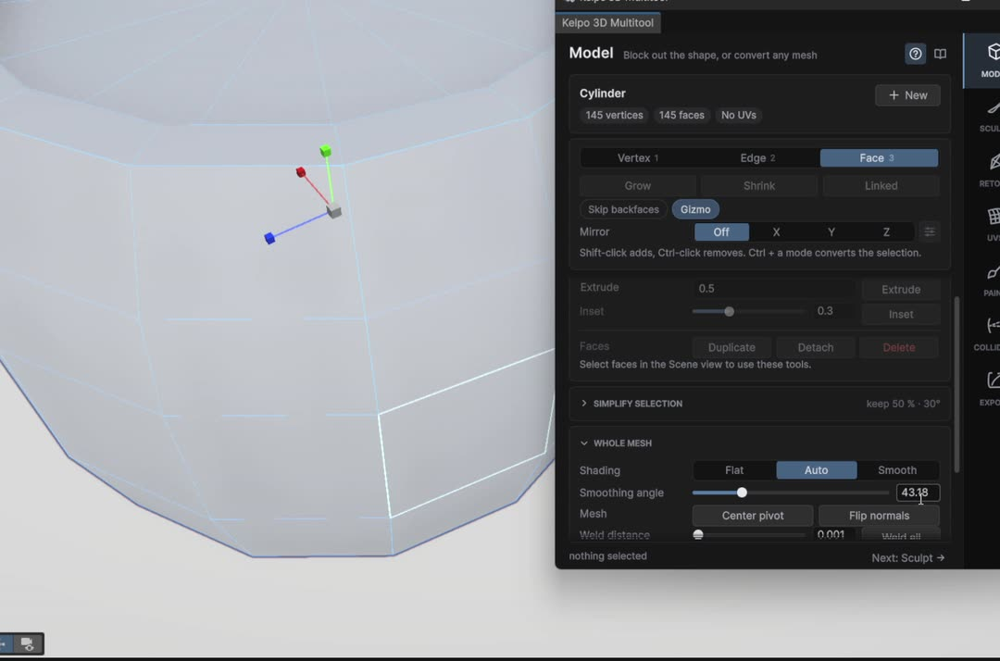
0:13
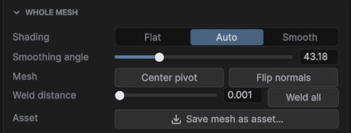
Cut a band for the hoop
The hoop starts life as a copy of the barrel's own faces, so it fits the curve exactly. First we need a band of faces the right height.
- In Edge mode (2), click an upright edge and press Ctrl+R for a new ring.
- Press W and drag it up toward the rim. Then R to scale it so it sits on the curve again. The strip between this ring and the one above is the band.
- Click one upright edge inside the band and press Ring (Shift+L). All 16 edges around the band get selected.
- Hold Ctrl and click Face. The edges turn into the 16 faces between them. The footer says 16 faces selected.
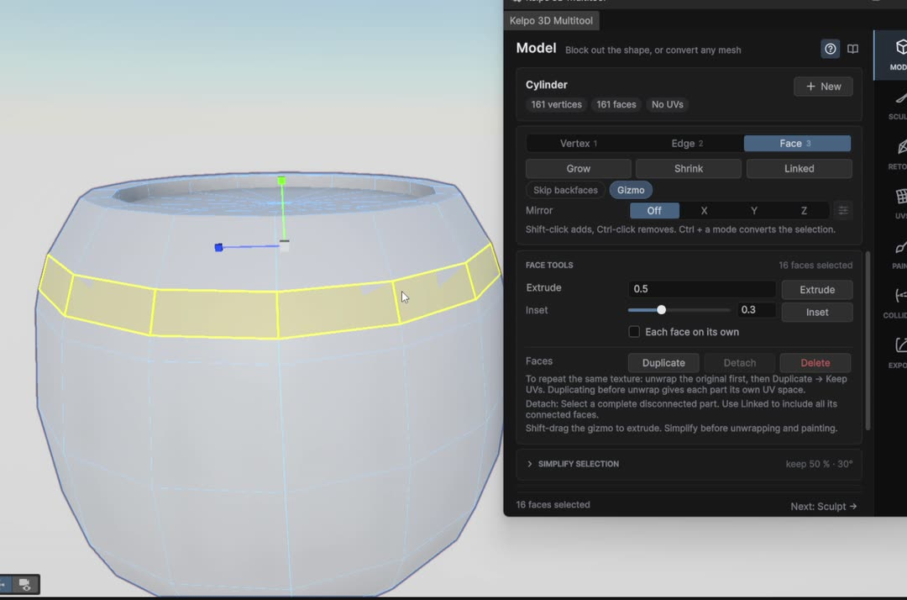
0:18keys here 2 Ctrl+R W R Shift+L Ctrl+click Face
Turn the band into a hoop
Duplicate makes a loose copy inside the same object. Shift-scaling it outward gives it thickness, and it stays part of the barrel for unwrapping and painting later.
- With the 16 band faces selected, click Duplicate in the Face tools. The copy is a separate piece and it's the one selected.
- Press W and lift the copy up off the barrel. That's only so you can see what you're doing.
- Press R, hold Shift and drag the center cube outward. The band grows a top and bottom edge and becomes a thick hoop.
- Click one face of the hoop and press Linked to select all of it (48 faces).
- Press W and drop it back over the band. R if it needs to hug tighter.

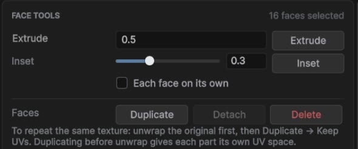
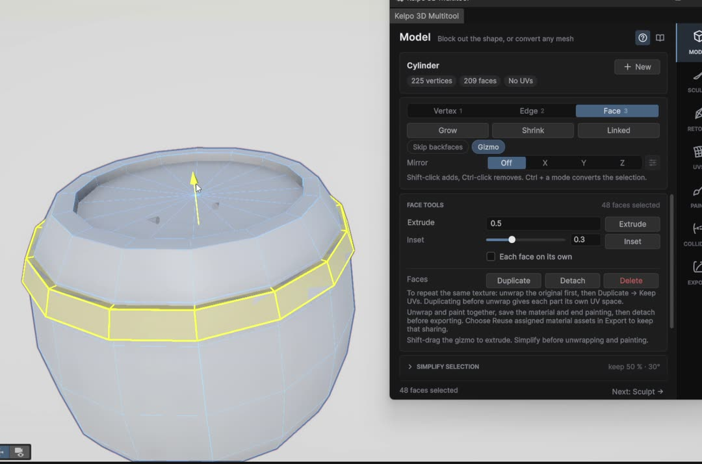
0:25keys here W R Shift+drag
Second hoop, then close the bottom
The second hoop is a copy of the first. The bottom gets the same inset-and-weld treatment as the lid.
- With the hoop selected (Linked), click Duplicate. Move the copy down with W and fit it with R.
- If a hoop floats or sinks, select the barrel ring under it (click an edge, L) and scale that instead.
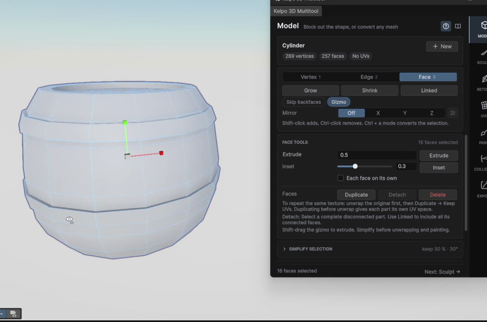
0:15- Orbit underneath with Alt+drag and click the bottom face in Face mode.
- R + Shift+drag inward to inset it, Ctrl+click Vertex, then Weld selected vertices. Same as the lid.
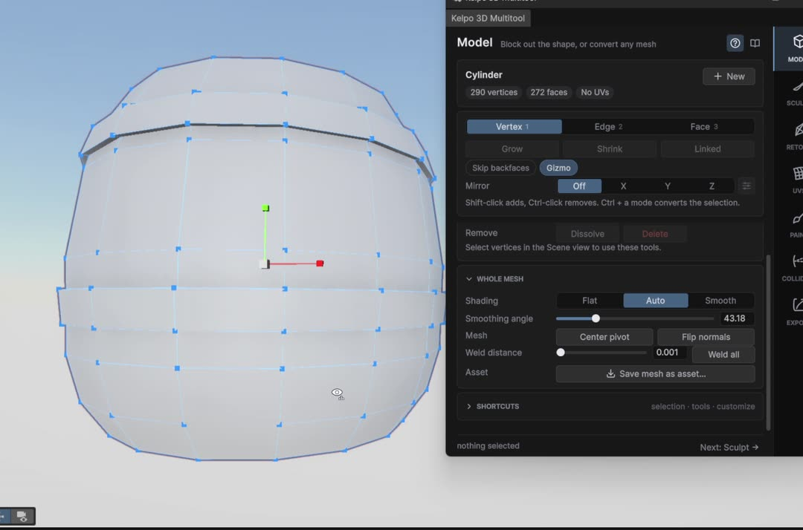
0:13The finished model is 290 vertices · 272 faces. That's the shape done. Everything from here on is surface.
part 2 UVs
Unwrap it for painting
Painting needs every face to have its own patch of texture. Unique unwrap lays the mesh out flat with no overlaps.
- Click UVs on the rail. A barrel can skip Sculpt and Retopo. The card says the mesh has no UVs yet.
- Click Unique unwrap · 1 object.
- Check the Layout card: it should say Paint-ready: no overlaps, everything inside 0–1. Mine came out as 25 islands covering 36% of the square.
- Seams draws the cuts on the mesh. Checker puts a test pattern on it for a moment.
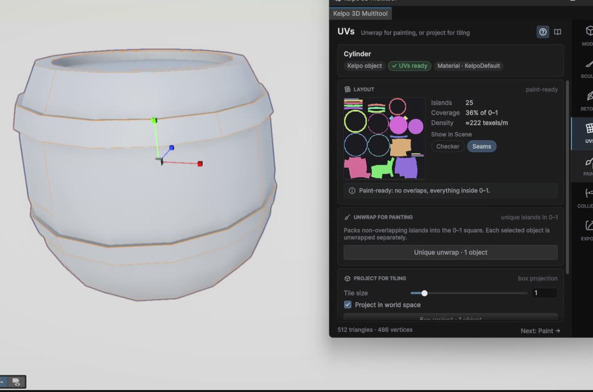
0:08
part 3 paint
Start a paint session
Painting happens in a session: Kelpo sets up working textures on the object, and you paint straight onto the mesh in the Scene view.
- Click Paint on the rail.
- Under New session, pick a Resolution. I used 2048, the biggest. 1024 uses a lot less memory and is plenty for small props.
- Click Start painting. The card now shows 2048 px · Slot 1 · 1 layer · UVs ready.

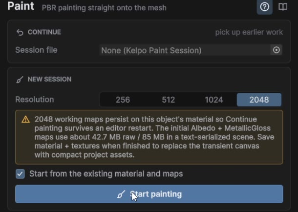
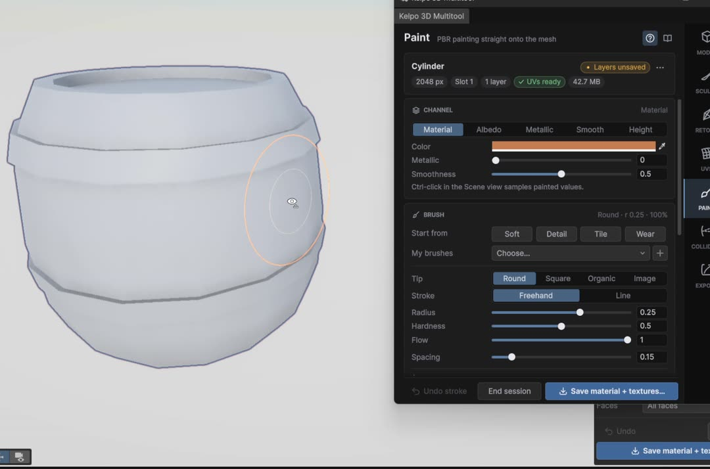
0:08Pick a base color and fill
In Material mode one stroke lays down color, metalness and shininess together, so you think in materials instead of separate maps.
- Leave Channel on Material.
- Click the Color swatch and pick a warm orange-brown in Unity's color picker. Mine is BC6C0B.
- Set Metallic to 0 (wood isn't metal) and Smoothness to about 0.3 (dull, not glossy).
- Scroll down to Layers and click Fill layer. The whole barrel takes the color.
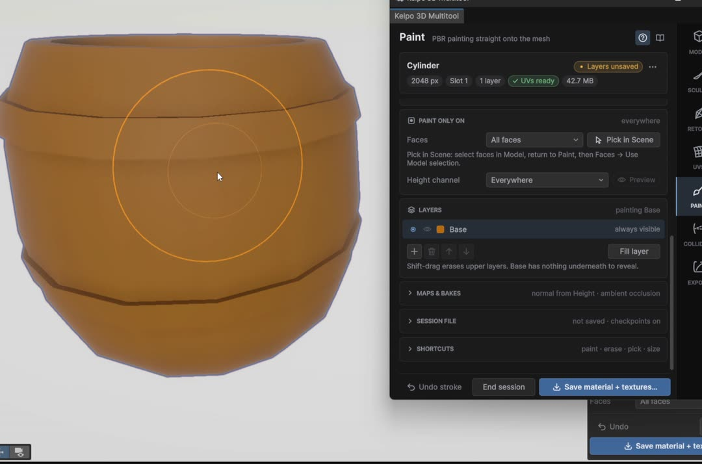
0:19The other channel buttons, Albedo, Metallic, Smooth and Height, paint one map at a time. We'll use Height in a moment.
Work in layers
Layers keep each idea separate: wood, grooves, metal, dents. You can fade or hide one without touching the others.
- In Layers, click +. It offers Empty layer or Carved material preset. Pick Empty layer.
- Click the new layer's name and type a better one. I called mine WoodBase.
- The circle on the left picks which layer you paint on. The eye shows or hides it, and the slider is its opacity. Base is always there underneath.
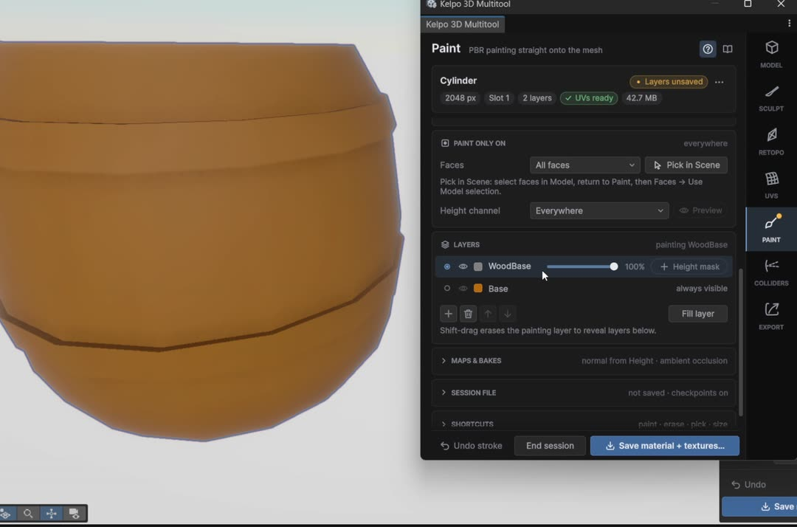
0:15- [ / ] or Shift+scroll
- Brush smaller or bigger. You'll see the ring on the barrel change.
- Ctrl+scroll
- Brush flow: how much paint each dab lays down.
- Ctrl+click
- Eyedropper. Picks up color, metallic and smoothness from the surface.
- Shift+drag
- Erase on the current layer so the ones below show through. Base can't be erased.
- Ctrl+Z / Ctrl+Y
- Undo and redo strokes, fills and layer changes.
Paint only the wood
If the brush can't reach the hoops, you can paint the wood with big, lazy strokes and still get clean edges.
- Open Paint only on and click Pick in Scene. Kelpo jumps to the Model tab with a Choosing a paint area card.
- Click one face of the barrel body and press Linked. The hoops are separate pieces, so only the body gets selected. Ctrl+click any faces you want to leave out. I dropped the top.
- Click Return to Paint.
- Open the Faces dropdown and choose Use Model selection. It now reads Selection · 160 faces.
With Tint the protected faces on, everything you can't paint gets a pale tint. The tint hides while you're mid-stroke, so the colors flash a bit. That's normal.
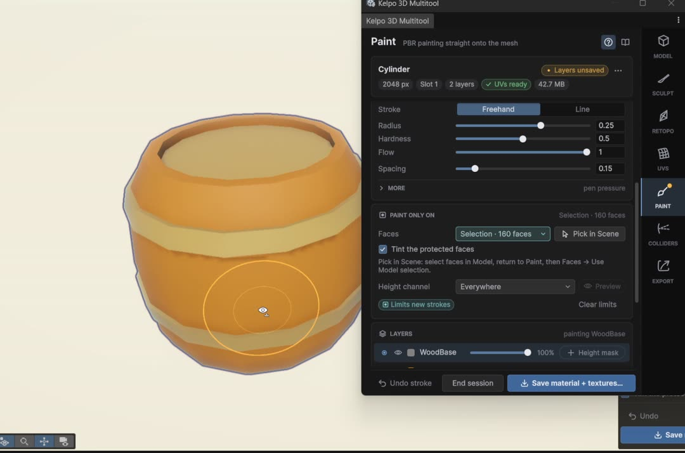
0:24
Save a brush you like
A saved brush remembers the color, tip, size and settings, so you can jump between wood and metal in one click.
- Next to My brushes, click +.
- Type a name in Save as, mine is WoodBaseBrush, and click Save.
- Later, pick it from the My brushes dropdown to get it back. Update overwrites it with your current settings.
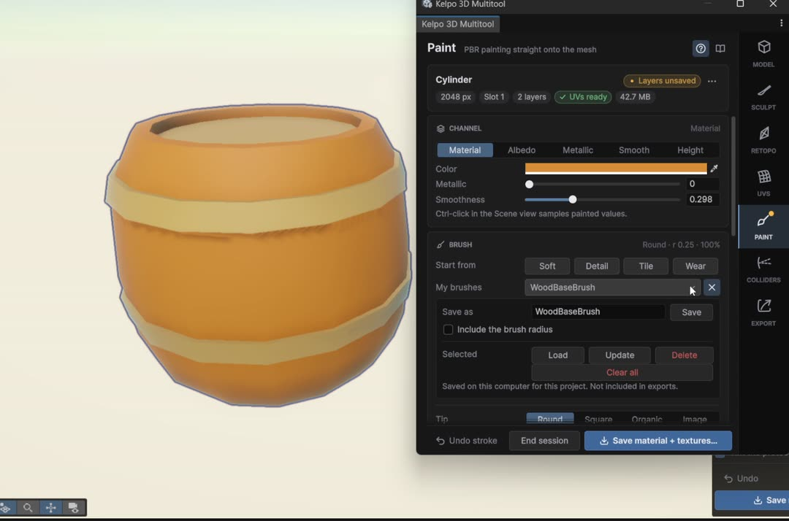
0:13Start from has four quick starting points too: Soft, Detail, Tile and Wear.
Stamp planks with an image
An image tip turns any texture into a stamp. One plank image gives you every plank line on the barrel.
- Set Tip to Image. Kelpo asks for an image.
- Click the circle on the Image field and pick a texture from your project. Mine is a plank-stripe image called woodplanks_txt.
- Leave Color on Multiply with image and Shape from on Alpha. Use Brightness or Darkness for images without transparency.
- Make the brush big (Shift+scroll) and stamp around the barrel. Dark plank lines appear.

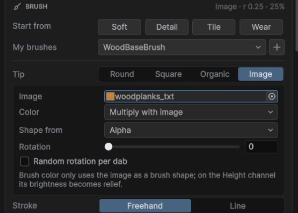
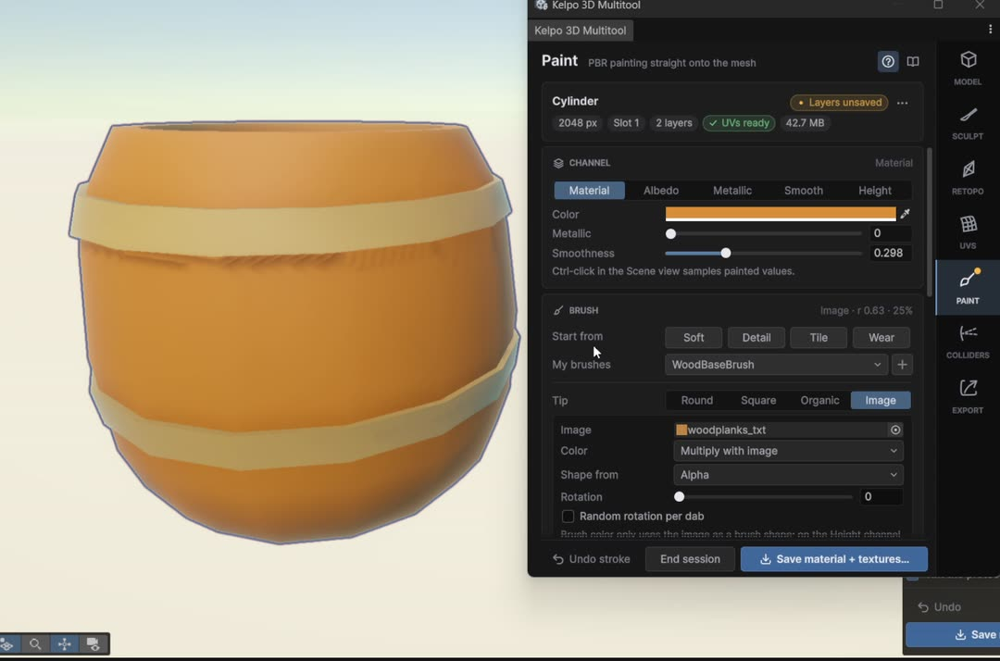
0:18Raise the planks with Height
Height paints bumps without touching the mesh. Kelpo turns it into a normal map as you go, so the planks catch the light.
- Add another Empty layer and call it WoodDetailHeight. Height gets its own layer so you can fade it later.
- Set Channel to Height. The hint explains it: 0.5 is neutral, lower carves, higher raises.
- Drag the value to 1 to raise, or under 0.5 to carve. I tried carving first, then went with raising.
- Keep the plank stamp and go all the way round. I used Radius about 0.6, Hardness 0.12, Flow 1.
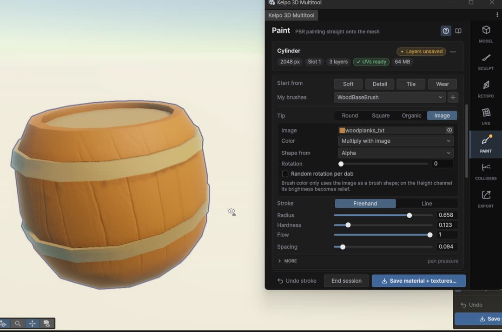
0:24keys here Shift+scroll Ctrl+scroll
Dark grooves only where they belong
Paint only on can also follow the Height you painted. Limit the brush to the cavities and dark paint lands only in the gaps between planks, however sloppy the stroke.
- Add an Empty layer called ColorDetail.
- In Paint only on, open Height channel: Everywhere, Carved, Raised, Edges or Cavities. Click Preview to see where the brush may paint. That's the orange.
- Choose Cavities and turn Curvature down until only thin lines in the grooves stay orange. Mine ended at 0.003, with Softness 0.032.
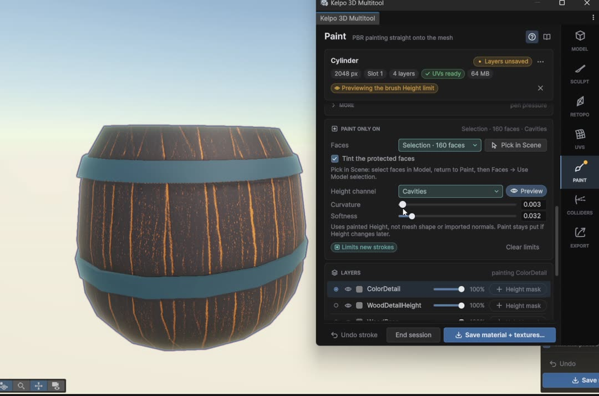
0:26
- Set the brush up: Tip Organic, Start from Wear. Back in Material channel, pick a dark brown (71512B), Metallic 0, Smoothness almost 0.
- Paint over the whole barrel. The first stroke ends the preview, and the brown only lands in the grooves.
- Too strong? Pull the ColorDetail opacity slider down. Mine sits at 44%.
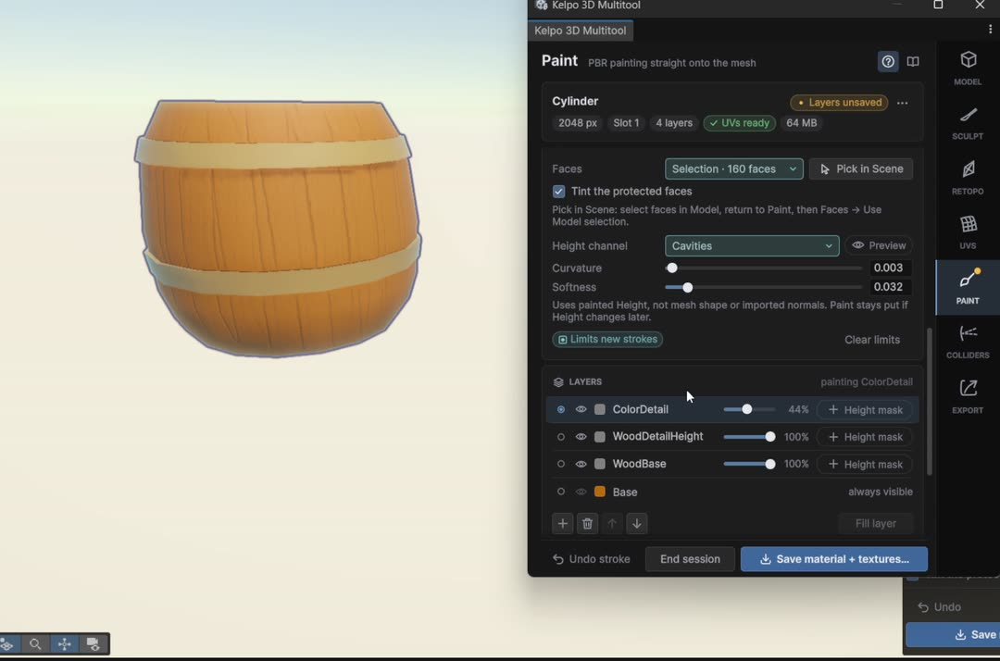
0:26Metal hoops
Same trick the other way round: limit the brush to the hoops and paint them with a shiny metal material.
- Add an Empty layer called METAL.
- Pick in Scene again. Click a face on the top hoop, Shift+click one on the bottom hoop, then Linked. Both hoops are selected, 96 faces.
- Return to Paint, then Faces → Use Model selection. Now the wood is protected.
- Pick a metal brush. I had one saved already, MetalRimBase: light grey, Metallic 1, Smoothness 0.5, Organic tip. Loading a preset also sets its own Height limit, here back to Everywhere.
- Paint the hoops, including the top, bottom and the edges underneath.
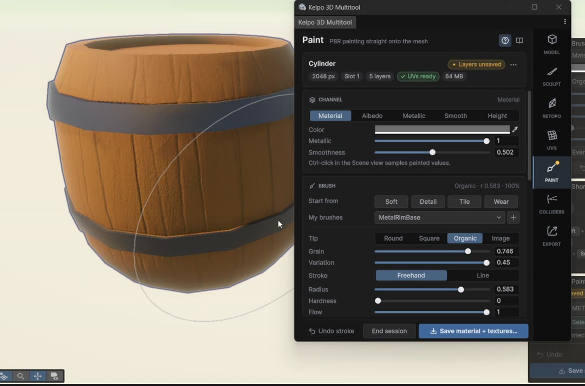
0:26keys here Shift+click Alt+drag
Dents in the metal
Carving a few scratches into Height makes the metal look used. On its own layer you can fade them until they're just right.
- Add an Empty layer called MetalDetail and set Channel to Height.
- Tip Image, and pick a scratch texture. Mine is Rich-scratch-cluster-mask-512.
- Set the Height value under 0.5 so the stamps carve. Mine is 0.286.
- Tick Random rotation per dab so the scratches don't repeat. Use a small brush (about 0.13) and stamp along both hoops.
- Lower the layer's opacity until the dents are subtle. Mine is at 39%.
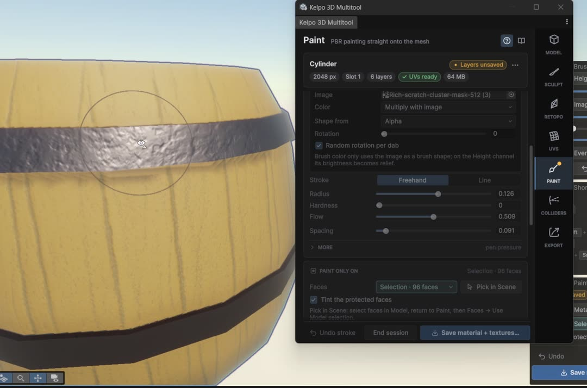
0:23
Look at it, then save
Clear the face limit so the tint goes away and you see the real thing. Then make sure the paint doesn't only live in the scene.
- Faces → All faces. The tint disappears.
- Orbit around (Alt+drag) and look for gaps.
- When you're happy, click Save material + textures… in the footer. It writes the material and its texture maps to your project and ends the session.
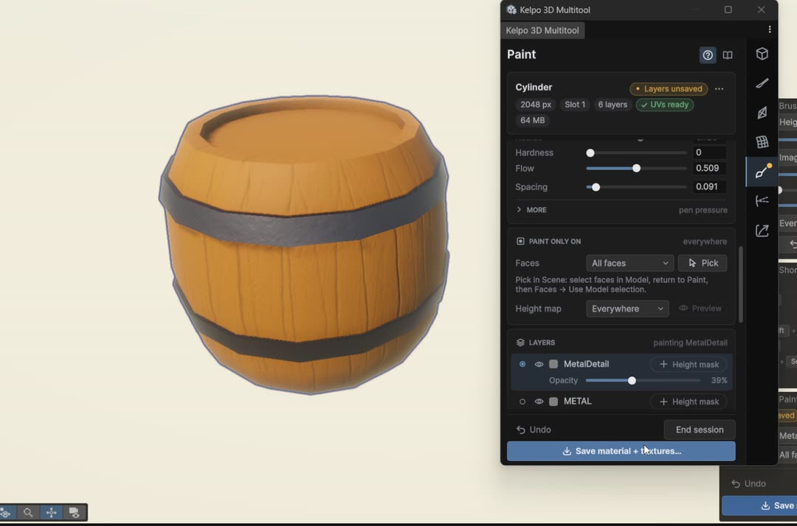
0:08part 4 colliders & export
Add a collider
The barrel has 512 triangles. Physics doesn't need that many. A simplified copy keeps it fast.
- Click Colliders on the rail.
- In Simplify the mesh, tick Convex. Unity needs convex colliders on anything with a Rigidbody, and it suits a barrel anyway.
- Click Generate collider. The status bar says how many triangles it kept.
- Change Keep % and click Generate collider again until the green wireframe hugs the barrel. I ended at 22% (112 triangles).
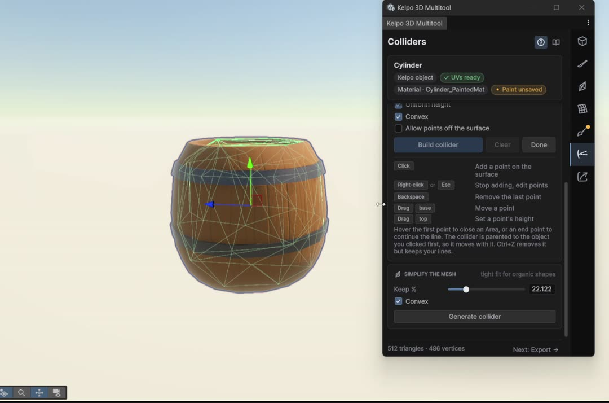
0:12
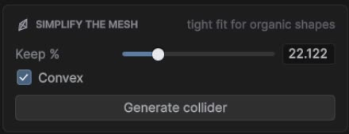
Or draw one yourself
Draw a collider builds one from points you click. Choose Shape Area, press Start drawing and click points around the barrel. Backspace removes the last point and Esc stops adding. Drag the Height label to set how tall it is, then Build collider. Clear starts over and Done finishes.
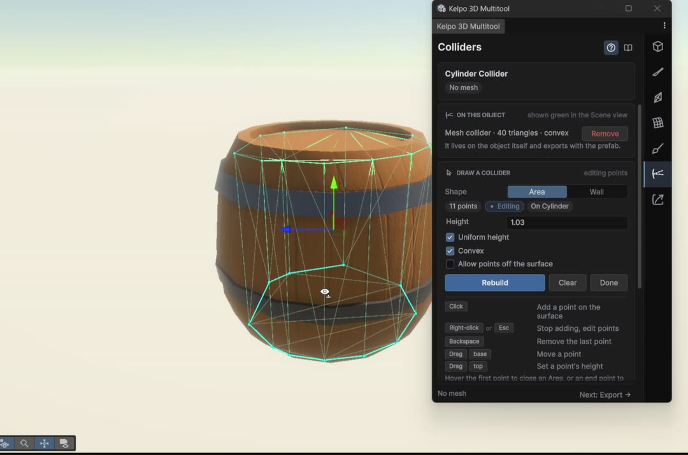
0:24keys here Backspace Esc Ctrl+Z
Export a prefab
Export packs the mesh, textures, material and collider into a normal prefab. It doesn't need Kelpo to work, so you can use it in any scene or project.
- Click Export on the rail and select the barrel.
- Give it a Name. It follows the object's name (mine said Cylinder) until you type your own.
- Check the options. I used Keep scale on the root, Write material and texture copies and Include colliders.
- Click Export as prefab… and choose a folder inside Assets.
- Kelpo asks what to do with the scene object. Delete Working Object (Undoable) cleans up, Keep Working Object keeps it editable.

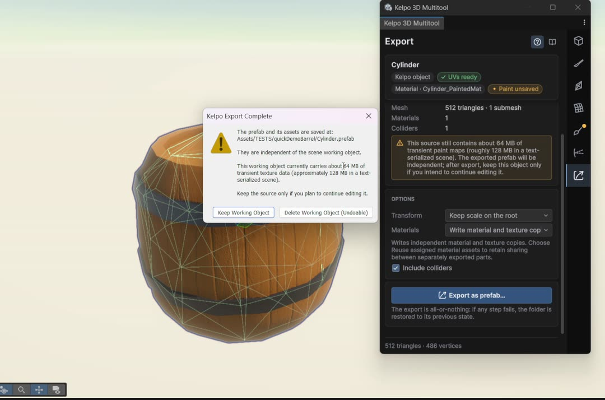
0:17
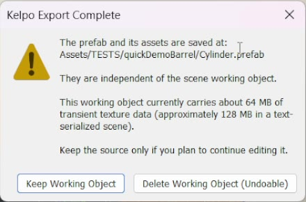
The folder now holds the prefab plus its pieces:

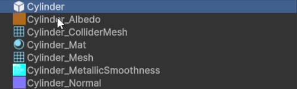
bonus a burnt variant
Make the exported barrel editable again
A second barrel doesn't need a second start. Convert the exported one and keep its UVs and paint.
- Drag the exported prefab from the Project window into the scene and select it.
- I removed its Mesh Collider in the Inspector first (right-click the component → Remove Component), since the shape is about to change.
- In the Model tab, under Or convert an existing mesh, keep Preserve existing UV mapping and textures ticked and click Convert selection.
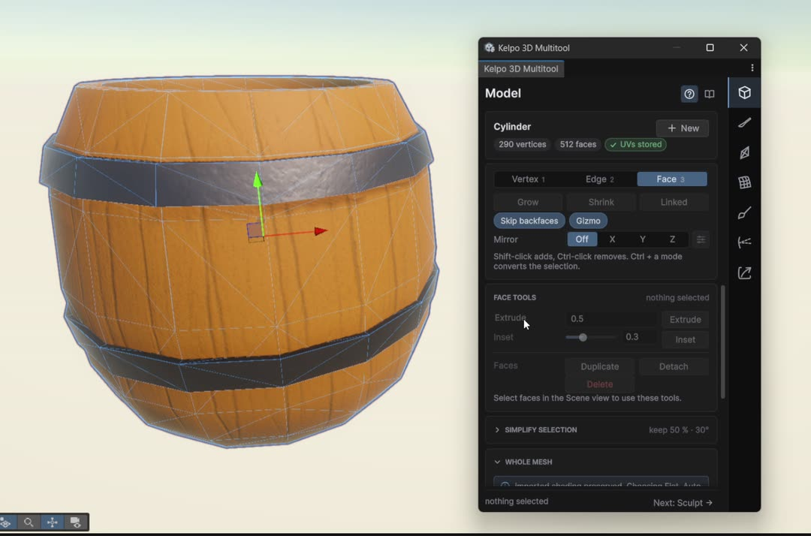
0:10
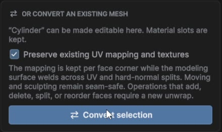
Rough it up in Sculpt
Sculpt pushes vertices around like clay. Moving vertices keeps the UVs, so the paint stays on.
- Click Sculpt on the rail. The brushes are grouped: Draw Clay Inflate, Grab Pinch Crease, Smooth Flatten Refine.
- Draw with a small brush puts dents and bumps in the planks and hoops.
- Grab with a big brush pulls the rim, the bottom and the sides out of true. That's what makes it look beaten.
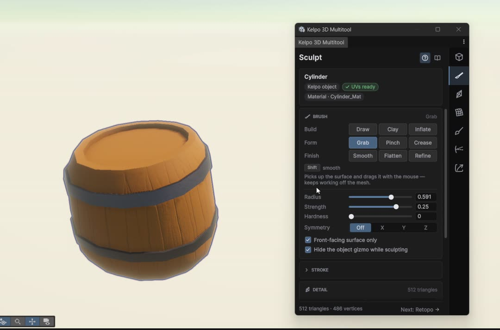
0:15keys here hold Shift smooth · hold Ctrl invert · [ ] size · Ctrl+scroll strength
Paint it burnt
Starting from the existing material keeps the old wood underneath, so dark paint and a few orange glints read as charring instead of a new barrel.
- Paint → keep Start from the existing material and maps ticked → Start painting. The old look comes in as the Base layer.
- With the scratch image tip and a big brush, stamp dark greys and browns all over. I went from 848484 down to 4D4949 and 523015.
- Pick an orange (D56E1B), drop Flow to about 0.2 and dab a few ember glints.
- Switch Channel to Metallic, set it to 0 and paint over everything. Then Smooth at 0. Charred wood is matte.
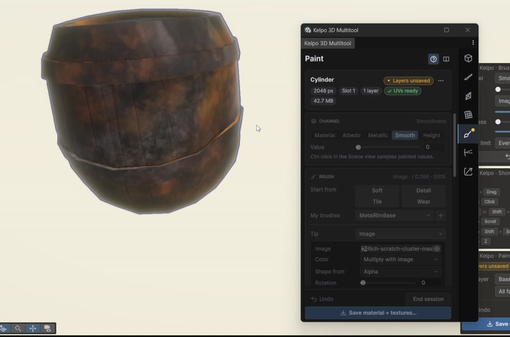
0:22Export the variant
Same export as before. Give it a new name so it doesn't overwrite the first barrel.
- Export tab, type a new Name. Mine is QuickBarrelRoughedup.
- Export as prefab…, same folder is fine, then Delete Working Object (Undoable).
- I skipped the collider this time. Do the Colliders step first if this one needs physics.
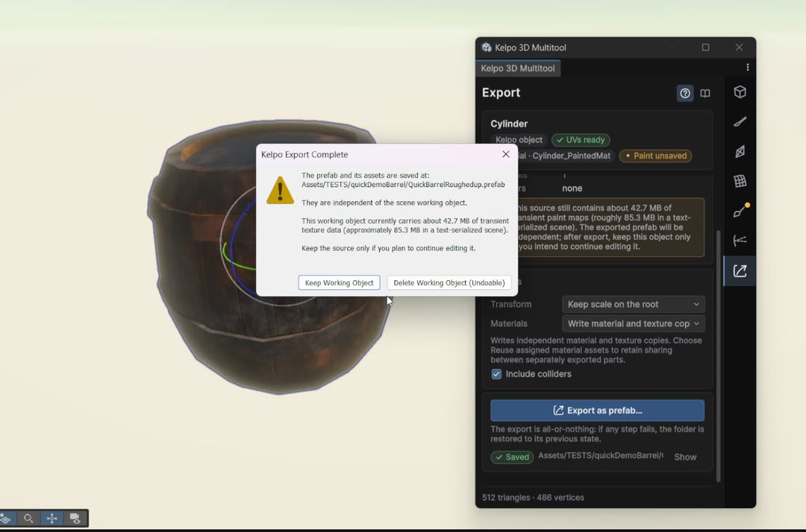
0:12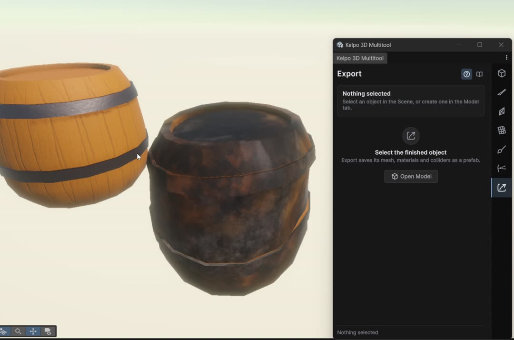
0:09
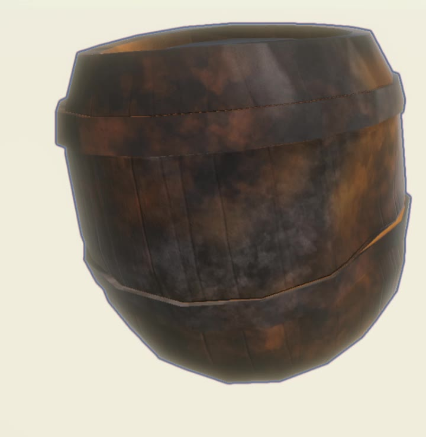
reference
When something goes wrong
You'll misclick. I made a cube instead of a cylinder in the first ten seconds of this recording. These are the fixes I reach for most.
- Ctrl+Z / Ctrl+Y
- Undo and redo, for geometry, selections and paint.
- Delete
- Removes the selection. Selected edges or vertices take their faces with them.
- Backspace
- Dissolves: the edge or vertex goes but the surface stays.
- Weld selected vertices
- In Whole mesh. Two or more selected vertices merge into one, right in the middle.
- Weld all
- Merges any vertices closer than Weld distance. Keep that distance tiny.
- Cap hole
- In Edge mode, select one edge on an open border and the hole gets filled.
- Undo stroke · End session
- In the Paint footer. Ending a session keeps the look in the scene but doesn't save any files.
With nothing selected, Delete and Backspace go to Unity as usual. The Model keys can be changed under Shortcuts → Customize keys.
All the shortcuts
The whole list in one place. Where it says Ctrl/Cmd, use Cmd on a Mac.
| Ctrl/Cmd+Shift+K | Open the Kelpo 3D Multitool window |
|---|---|
| Ctrl+Z / Ctrl+Y | Undo / redo |
| 1 / 2 / 3 | Vertex / Edge / Face mode (mouse over the Scene view) |
|---|---|
| Ctrl/Cmd+A | Select everything in the current mode |
| Shift+click / Ctrl+click | Add to / remove from the selection |
| drag on empty space | Box select (anything the box crosses counts) |
| Ctrl/Cmd+click a mode | Convert the selection to that mode |
| L / Shift+L | Select edge loop / ring |
| C / Ctrl+R | Connect selected vertices or edges / loop cut |
| Delete / Backspace | Delete the selection / dissolve it and keep the surface |
| W / E / R | Move / rotate / scale the selection |
| Shift+drag the gizmo | Extrude faces, or grow open border edges, in that motion |
L, Shift+L, C, Ctrl+R, Delete and Backspace are defaults. Change them under Shortcuts → Customize keys.
| [ / ] | Brush smaller / bigger |
|---|---|
| Shift+scroll | Brush size |
| Ctrl+scroll | Brush strength (Sculpt) or flow (Paint) |
| hold Shift | Sculpt: quick Smooth with any brush |
| hold Ctrl | Sculpt: invert the brush (Draw carves, Clay scrapes, Inflate deflates…) |
| Shift+drag | Retopo: erase the protect mask. Paint: erase on an upper layer |
| Ctrl+click | Paint: eyedropper |
| Esc or right-click | Paint: cancel a Line stroke |
| Backspace | Remove the last point |
|---|---|
| Esc | Stop adding points (press again to end) |
| Alt+drag | Orbit |
|---|---|
| middle-drag / scroll | Pan / zoom |
| right-drag | Look around |
| F | Frame the selected object |
| X / Z | Handle rotation Global/Local, handle position Pivot/Center |
| Ctrl+S | Save the scene |
more guides
Stuck somewhere, or found a mistake in this guide? Write to kelpo.works@gmail.com. The full manual ships with the package too. The book button in the window opens it.